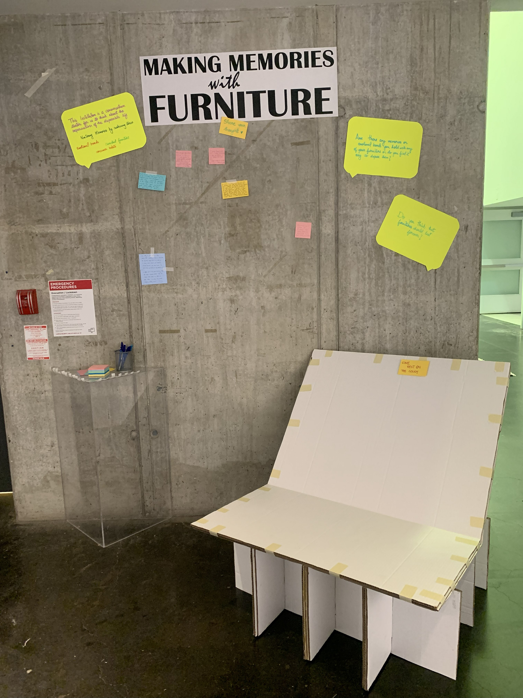
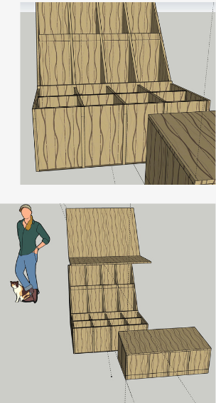
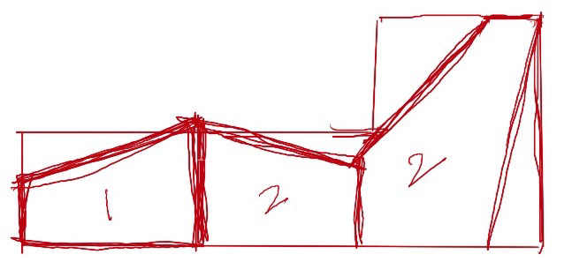
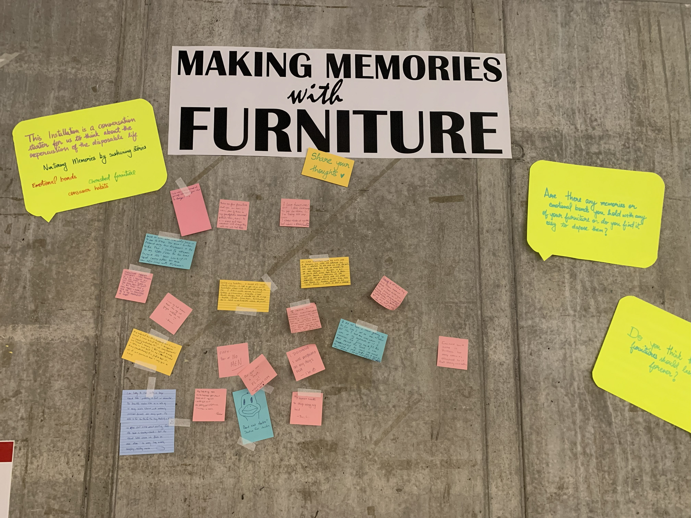
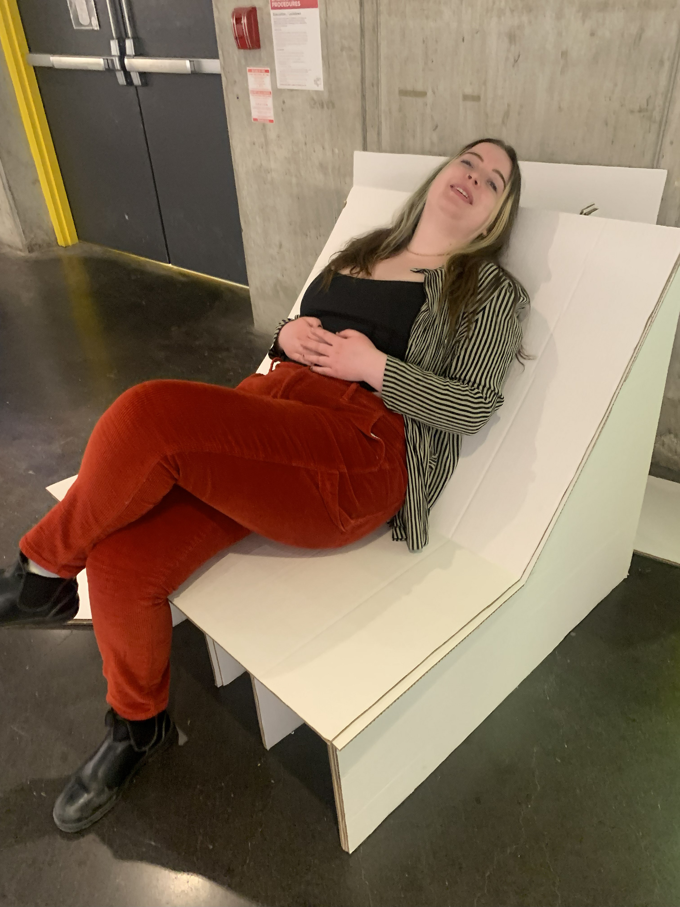
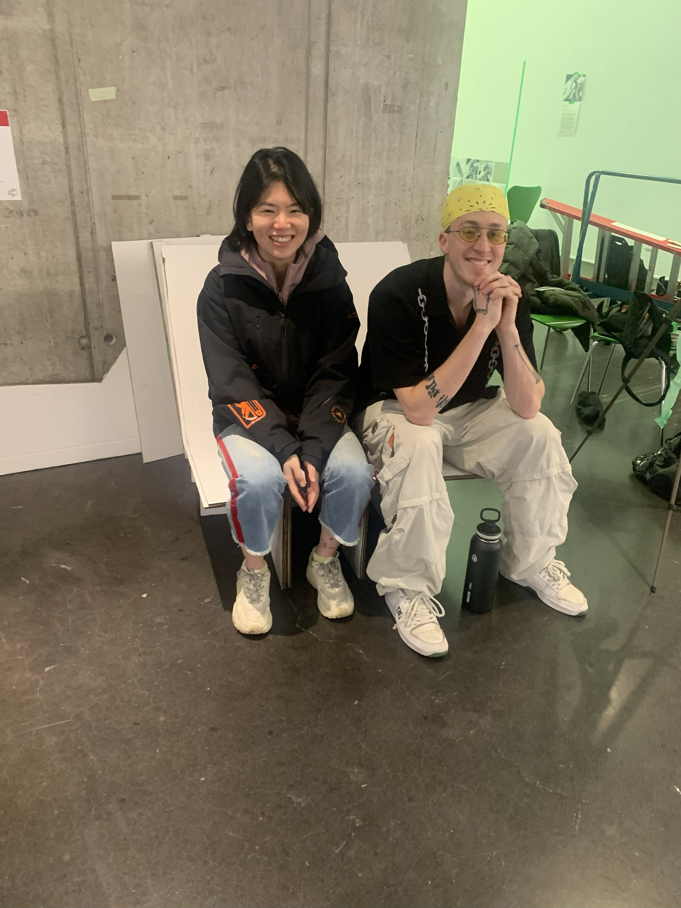
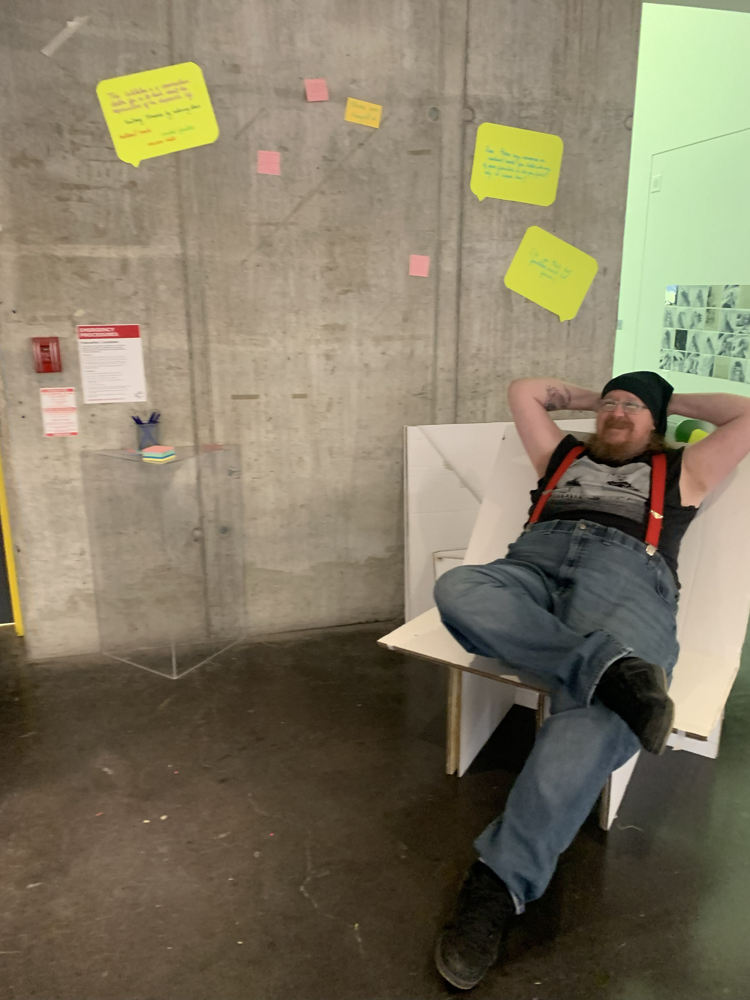

Life After the Thesis
Continuing the circular journey of my modular design
My thesis project, Do We Need New?, explored how modular furniture could respond to the growing environmental impact of the furniture industry. Designed to be adaptable, repairable, and multifunctional, the system was built around the idea that a single piece could take on new lives across spaces and time — reducing waste and extending material life cycles.
A living example of circular design
After the exhibition, I continued testing the system in real-life conditions.
Several modules are now with my previous housemate, reconfigured into storage shelves that function as part of her daily setup. The remaining components moved with me to my new apartment, where they now serve as a bookshelf and side table for plants.
These transformations demonstrate the value of flexibility in sustainable design — how thoughtfully designed components can adapt to different functions and environments rather than being discarded.
Sustaining value through adaptability
This ongoing use reinforces the principle that sustainability extends beyond material choice. It is embedded in how a design evolves, remains useful, and integrates into changing contexts. Each reconfiguration adds another chapter to the project's lifecycle, proving that durability can coexist with creativity and change.






